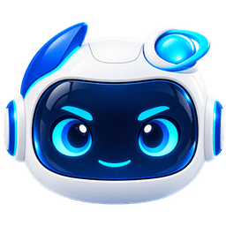
通用搭档avatar-general-v1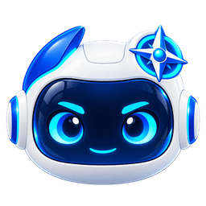
探索发现avatar-explorer-v1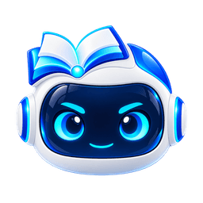
概念理解avatar-concept-v1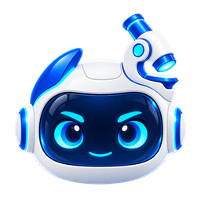
实验探究avatar-experiment-v1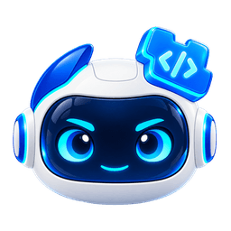
编程创造avatar-coding-v1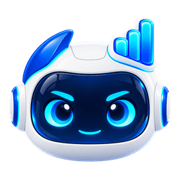
数据分析avatar-data-v1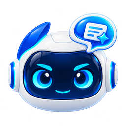
表达评议avatar-review-v1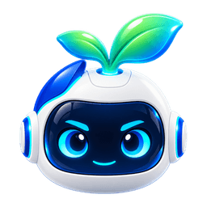
成长陪伴avatar-growth-v1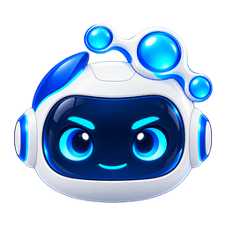
协作组织avatar-coordinator-v1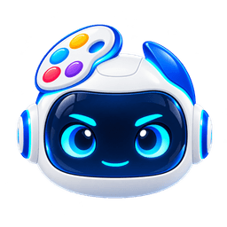
创意设计avatar-creative-v1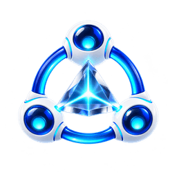
光学协作team-optics-v1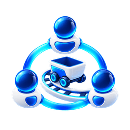
动能协作team-kinetic-v1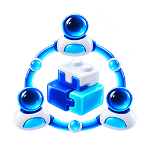
编程协作team-coding-v1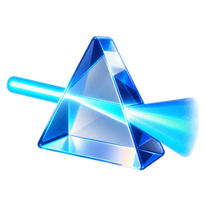
光学探究template-optics-v1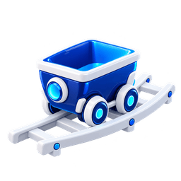
动能探究template-kinetic-v1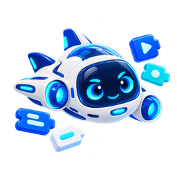
编程游戏template-coding-v1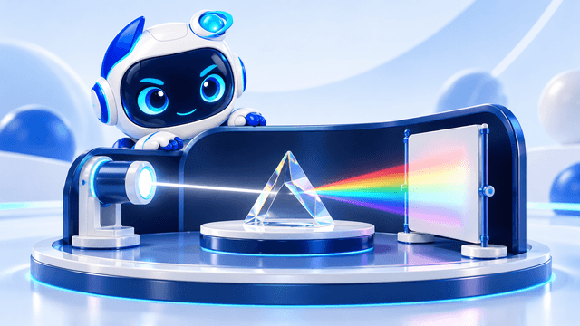
光学探究封面cover-optics-v1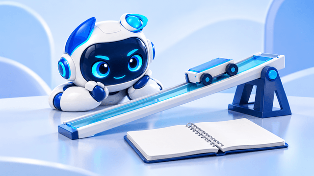
动能探究封面cover-kinetic-v1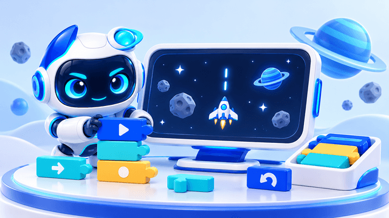
编程创作封面cover-coding-v1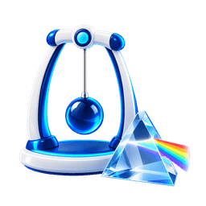
物理subject-physics-v1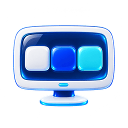
编程subject-coding-v1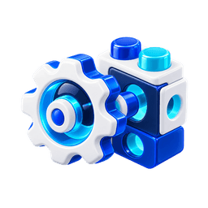
工程subject-engineering-v1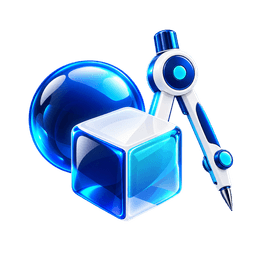
数学subject-math-v1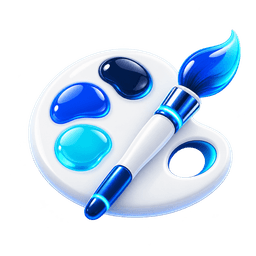
艺术subject-art-v1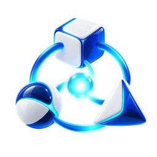
跨学科subject-interdisciplinary-v1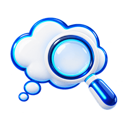
提问探究activity-inquiry-v1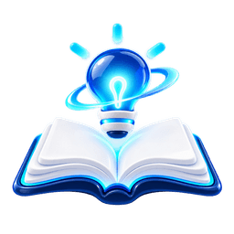
概念理解activity-concept-v1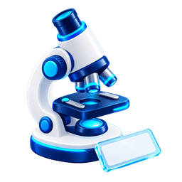
实验观察activity-experiment-v1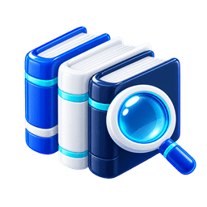
知识资料capability-knowledge-v1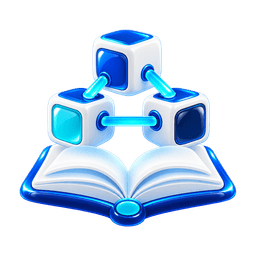
教学技能capability-skills-v1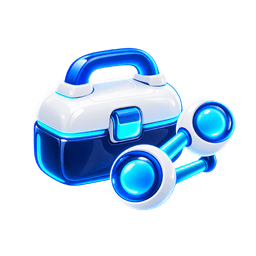
工具协作capability-tools-v1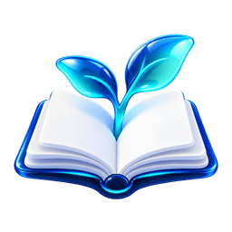
成长记录capability-growth-v1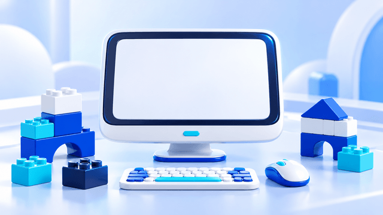
程序作品artifact-program-v1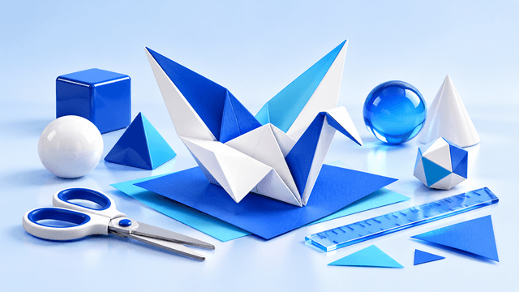
设计作品artifact-design-v1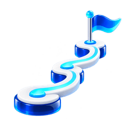
项目里程碑growth-milestone-v1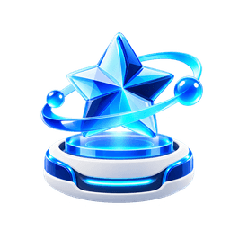
作品记录growth-artifact-v1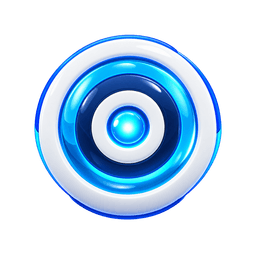
目标记录growth-objective-v1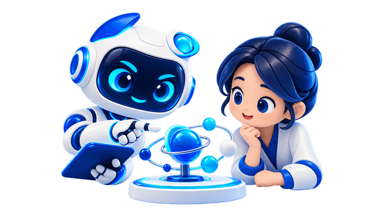
教师支持support-teacher-v1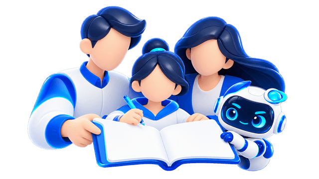
家校协作support-family-v1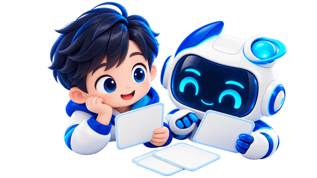
共同回顾support-review-v1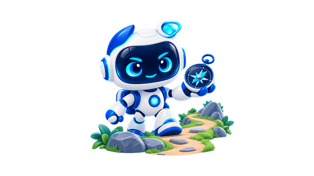
等待探索empty-explore-v1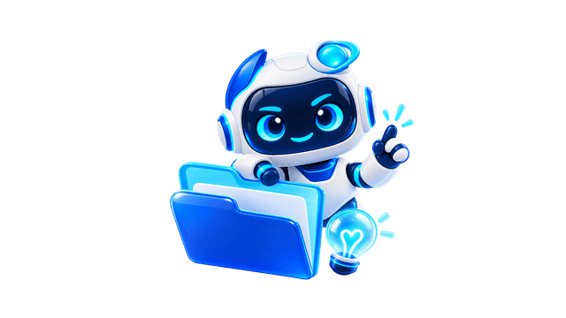
暂无项目empty-project-v1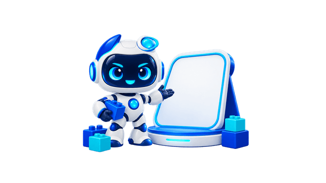
暂无作品empty-artifact-v1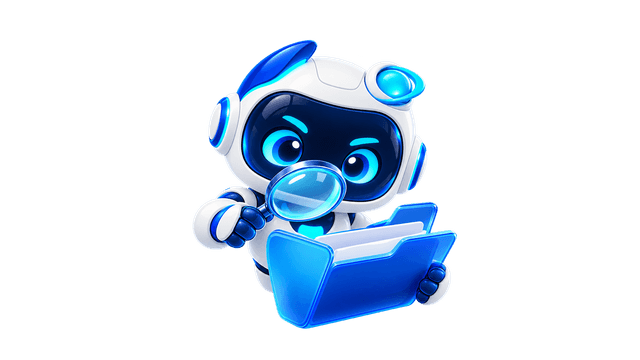
无检索结果empty-search-v1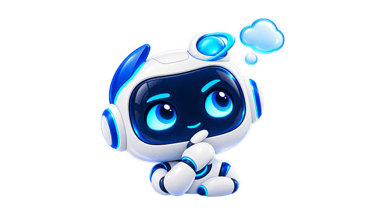
思考中的搭档emotion-thinking-v1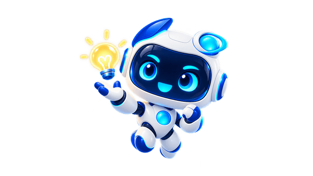
鼓励的搭档emotion-encourage-v1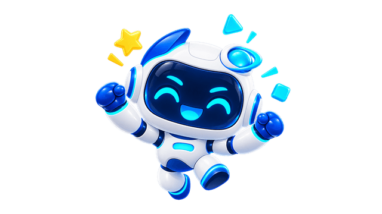
庆祝的搭档emotion-celebrate-v1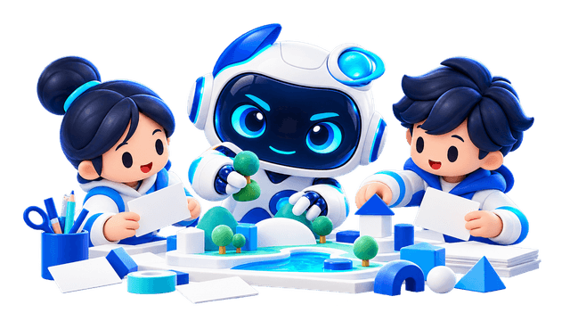
项目式探究brand-pbl-v1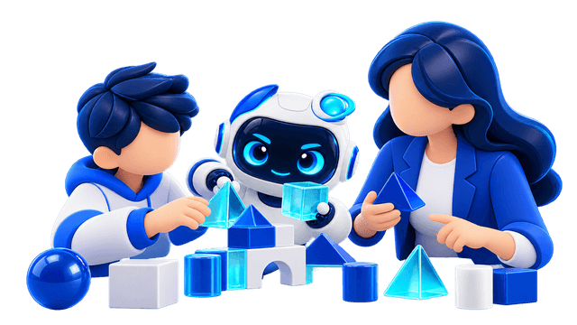
人机共成长brand-collaboration-v1